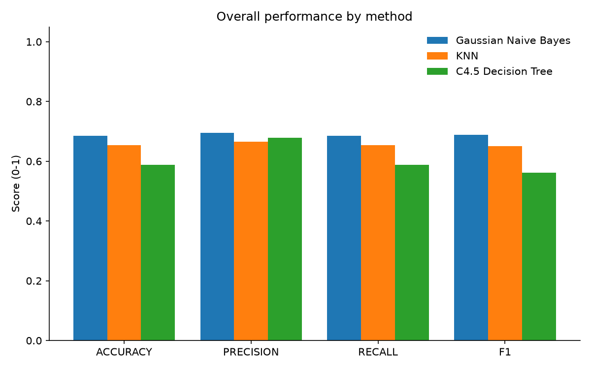
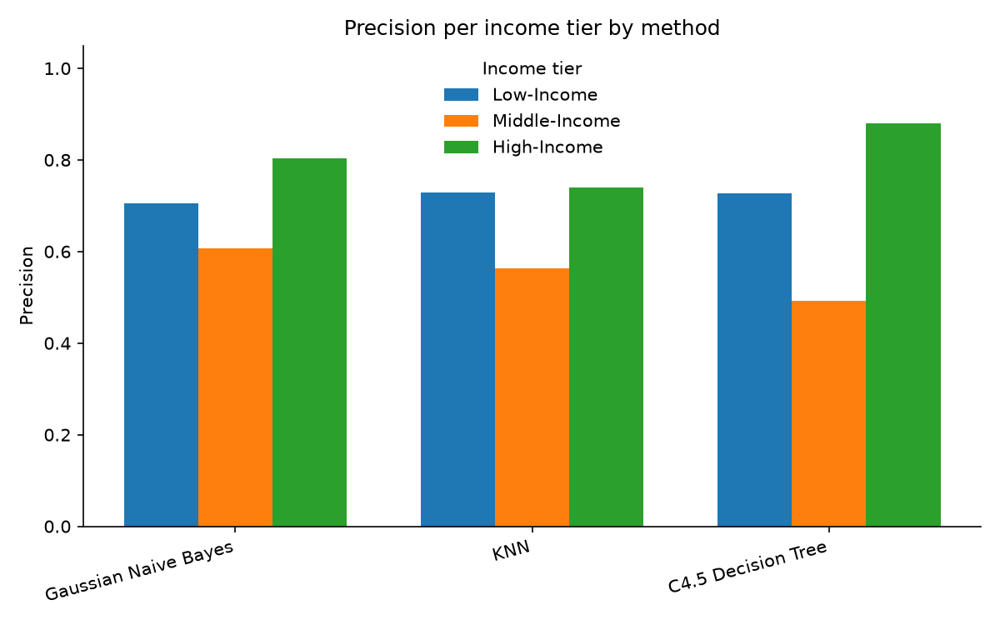
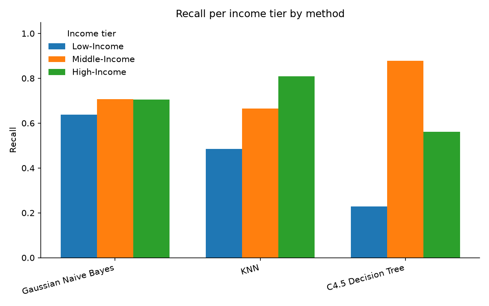
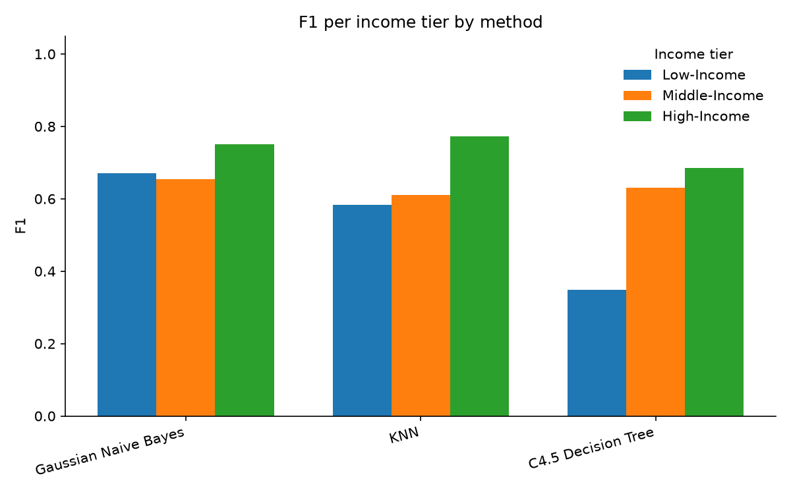

Problem Statement and Motivation
Problem Statement
Existing Philippine socioeconomic classification models primarily rely on granular household microdata and nominal peso income or expenditure values (Apus et al., 2023; Celis & Pagatpatan, 2019). As established in poverty literature, nominal currency figures suffer from rapid temporal degradation under inflation and fail to account for spatial purchasing power differences across heterogeneous provinces (Albert et al., 2020). Models trained on static cash thresholds may become obsolete across survey cycles unless adjusted with local price indices. In contrast, the Philippine Statistics Authority (PSA, 2024) publicly releases macro-level expenditure summaries by income decile across 119 provinces and Highly Urbanized Cities (HUCs). However, it remains unverified whether aggregated, relative expenditure percentage shares alone can overcome this nominal drift and reliably classify regional populations into Low-, Middle-, and High-income tiers without access to absolute income figures or private household records.
Motivation
Unlike raw peso amounts that quickly become obsolete under inflation, proportional spending shares provide an inflation-proof measure of living standards based on Engel's Law, where poorer groups are economically forced to spend most of their budget on food while richer groups spend more on services and transport. Furthermore, survey literature shows that collecting accurate absolute income and expenditure figures is notoriously difficult due to recall bias, informal earnings, and reluctance to report cash totals, whereas households can much more easily and accurately estimate the percentage breakdown of their budget (Deaton & Zaidi, 2002). By verifying whether open macro-level budget shares can distinguish socioeconomic tiers, this study gives local planners and researchers a practical diagnostic tool: they can take the average spending breakdown of any newly surveyed community group and instantly benchmark its economic standing against national decile standards without waiting for restricted household survey files.
Dataset
Source: Philippine Statistics Authority (PSA), 2023 Family Income and Expenditure Survey (FIES), Table 7: Total Annual Family Expenditure by Major Expenditure Group by Per Capita Income Decile and by Region, Province, and HUC.
Size: 1,180 rows = 118 areas (provinces and highly urbanized cities) × 10 income deciles.
Features: 10 expenditure shares, each the percentage of total family spending that goes to: food consumed at home, food consumed outside the home, housing and utilities, transport, information and communication, education, health, clothing and footwear, recreation, and special family occasions.
Target: income tier, made from the per capita income decile: Low (deciles 1–3), Middle (4–7), High (8–10).
Preprocessing:
- Removed the national and regional total rows.
- Cleaned area and category names.
- Selected the 10 expenditure groups.
- Reshaped the 10 decile columns into rows: one row per area and decile.
- Labelled each row with its income tier.
Methods
We compare three classification methods, all implemented from scratch in Python
. All three use the same 10 features, predict the same 3 income tiers,
and are trained and tested on exactly the same rows. Each method has the same
two functions: train_x() learns from the training set, and
predict_x() predicts the test set.
Gaussian Naive Bayes
Picks the income tier that makes a spending pattern most likely. For each tier, it
models every feature as a bell curve (Gaussian) using that tier's mean and
variance, then combines the 10 features with Bayes' rule, assuming they are
independent. Implemented with fit(), log_likelihood()
and predict(). More →
K-Nearest Neighbors
Picks the income tier shared by the most similar training rows. For each test row,
it measures Minkowski distance across all 10 features, finds the k
closest training rows, and takes a majority vote with nearest-neighbor
tie-breaking. Implemented with minkowski(), voting(),
train_knn() and predict_knn(). More →
C4.5 Decision Tree
TODO: short explanation More →
Experimental Setup
Data split
The data is split by area, not by row, so all 10 rows of an area are on the same side and no area is in both sets. 70% of the areas are used for training and 30% for testing, chosen at random with a fixed seed (42), so every method uses exactly the same rows.
- Training set: 83 areas, 830 rows
- Test set: 35 areas, 350 rows
Hyperparameters
| Method | Hyperparameters |
|---|---|
| Gaussian Naive Bayes | var_smoothing = 1e-9 |
| K-Nearest Neighbors | k = 5, p = 2 |
| C4.5 Decision Tree | max_depth = 10, min_samples = 10 |
Metrics
Accuracy, plus precision, recall and F1 for each income tier, combined into one score per model with a weighted mean (weighted by the number of test rows in each tier). All metrics are implemented from scratch. More →
Results
Test-set performance across all three classifiers (350 test rows across 35 areas; Precision, Recall, and F1 are weighted means across the three income tiers).
| Method | Accuracy | Precision | Recall | F1 |
|---|---|---|---|---|
| Gaussian Naive Bayes | 68.57% | 0.6958 | 0.6857 | 0.6878 |
| K-Nearest Neighbors | 65.43% | 0.6658 | 0.6543 | 0.6506 |
| C4.5 Decision Tree | 58.86% | 0.6792 | 0.5886 | 0.5625 |




Discussion
TODO: why the methods performed as they did, limitations, possible improvements
Conclusion
The experimental results show that Gaussian Naive Bayes achieved the highest performance at 68.57% accuracy (F1-score: 0.6878), followed by K-Nearest Neighbors at 65.43%, while the C4.5 Decision Tree scored lowest at 58.86%. These results confirm that proportional expenditure shares retain a recognizable socioeconomic signal across provinces under Engel's Law, even in the complete absence of nominal peso figures. However, an overall error rate between 31% and 41% indicates that macro-level provincial aggregation introduces significant class overlap between transitional deciles (Deciles 3 to 7), making standalone baseline models inadequate for high-stakes policy deployment.
References
- Albert, J. R. G., Santos, A. G. F., & Vizmanos, J. F. V. (2020). Poverty, the middle class, and income distribution: 2020 edition (PIDS Discussion Paper Series No. 2020-22). Philippine Institute for Development Studies. https://pidswebs.pids.gov.ph/CDN/PUBLICATIONS/pidsdps2022.pdf
- Apus, J. O., Mantalaba, K. D. V., Mackno, A. J. B., & Bokingkito, P. B., Jr. (2023). Predicting the Filipino household income using Naive Bayes classification algorithm. International Journal of Computing and Digital Systems, 1–7. https://journal.uob.edu.bh/items/fcb57bc6-2b1e-44a5-93ee-58a62b0bf7d1
- Celis, J. H. Q., & Pagatpatan, A. C., Jr. (2019). Predicting the poverty alleviation in the province of Eastern Samar using data mining techniques. International Journal of Recent Technology and Engineering, 8(3), 7140–7145. https://doi.org/10.35940/ijrte.C6082.098319
- Philippine Statistics Authority. (2024). Table 7. Total annual family expenditure by major expenditure group by per capita income decile and by region, province, and HUC: 2023. PSA OpenSTAT. https://openstat.psa.gov.ph/
- Deaton, A., & Zaidi, S. (2002). Guidelines for constructing consumption aggregates for welfare analysis (LSMS Working Paper No. 135). The World Bank. https://doi.org/10.1596/0-8213-4990-2